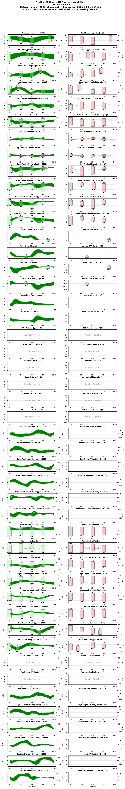
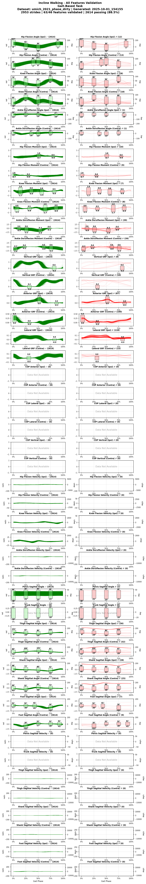
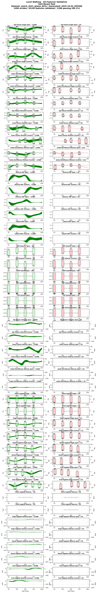
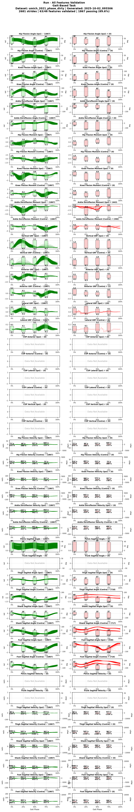
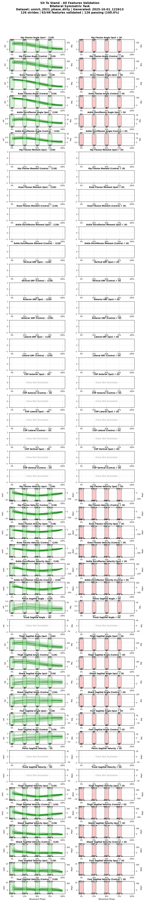
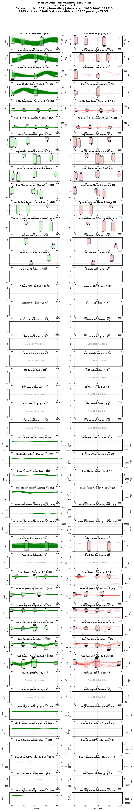
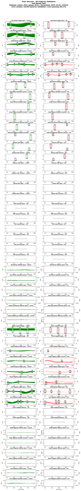
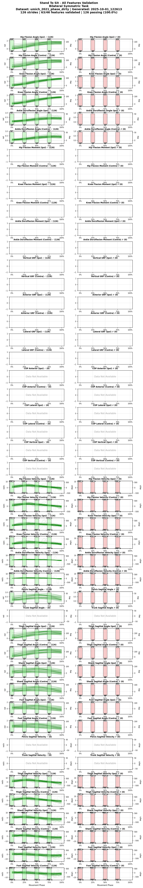
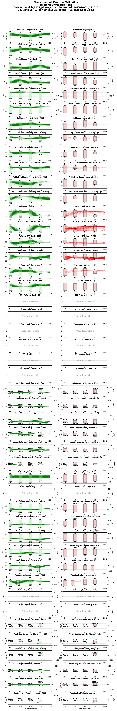

Umich 2021
These files and reports use earlier conversions and have not yet been re-checked. Read the processing notes and recorded checks before analysis.
Study and converted data
Overview
- Short Code: UM21
- Year: 2021
- Institution: Locolab
Human locomotion involves continuously variable activities including walking, running, and stair climbing over a range of speeds and inclinations as well as sit-stand, walk-run, and walk-stairs transitions. Understanding the kinematics and kinetics of the lower limbs during continuously varying locomotion is fundamental to developing robotic prostheses and exoskeletons that assist in community ambulation. However, available datasets on human locomotion neglect transitions between activities and/or continuous variations in speed and inclination during these activities. This data paper reports a new dataset that includes the lower-limb kinematics and kinetics of ten able-bodied participants walking at multiple inclines (±0°; 5° and 10°) and speeds (0.8 m/s; 1 m/s; 1.2 m/s), running at multiple speeds (1.8 m/s; 2 m/s; 2.2 m/s and 2.4 m/s), walking and running with constant acceleration (±0.2; 0.5), and stair ascent/descent with multiple stair inclines (20°; 25°; 30° and 35°). This dataset also includes sit-stand transitions, walk-run transitions, and walk-stairs transitions. Data were recorded by a Vicon motion capture system and, for applicable tasks, a Bertec instrumented treadmill.
Downloads
Dataset Information
Subjects and Tasks
- Number of Subjects: 10
- Tasks Included: Decline Walking, Incline Walking, Level Walking, Run, Sit To Stand, Stair Ascent, Stair Descent, Stand To Sit, Transition
Subject Metadata
The table below summarizes the subject_metadata key:value pairs per subject.
| Subject | age | sex | height_m | weight_kg |
|---|---|---|---|---|
| UM21_AB01 | 24 | Other | 1.90 | 87.0 |
| UM21_AB02 | 25 | Other | 1.74 | 75.0 |
| UM21_AB03 | 20 | Other | 1.62 | 61.4 |
| UM21_AB04 | 21 | Other | 1.79 | 77.5 |
| UM21_AB05 | 23 | Other | 1.63 | 77.4 |
| UM21_AB06 | 31 | Other | 1.77 | 73.3 |
| UM21_AB07 | 20 | Other | 1.62 | 53.7 |
| UM21_AB08 | 21 | Other | 1.80 | 85.1 |
| UM21_AB09 | 60 | Other | 1.77 | 81.2 |
| UM21_AB10 | 59 | Other | 1.62 | 74.7 |
Task Catalog
| Task | Task ID | Task Info |
|---|---|---|
| decline_walking | decline_10deg | incline_deg:-10,speed_m_s:0.8,treadmill:true,surface:treadmill |
| incline_deg:-10,speed_m_s:1.0,treadmill:true,surface:treadmill | ||
| incline_deg:-10,speed_m_s:1.2,treadmill:true,surface:treadmill | ||
| decline_5deg | incline_deg:-5,speed_m_s:0.8,treadmill:true,surface:treadmill | |
| incline_deg:-5,speed_m_s:1.0,treadmill:true,surface:treadmill | ||
| incline_deg:-5,speed_m_s:1.2,treadmill:true,surface:treadmill | ||
| incline_walking | incline_10deg | incline_deg:10,speed_m_s:0.8,treadmill:true,surface:treadmill |
| incline_deg:10,speed_m_s:1.0,treadmill:true,surface:treadmill | ||
| incline_deg:10,speed_m_s:1.2,treadmill:true,surface:treadmill | ||
| incline_5deg | incline_deg:5,speed_m_s:0.8,treadmill:true,surface:treadmill | |
| incline_deg:5,speed_m_s:1.0,treadmill:true,surface:treadmill | ||
| incline_deg:5,speed_m_s:1.2,treadmill:true,surface:treadmill | ||
| level_walking | level | incline_deg:0,speed_m_s:0.8,treadmill:true,surface:treadmill |
| incline_deg:0,speed_m_s:1.0,treadmill:true,surface:treadmill | ||
| incline_deg:0,speed_m_s:1.2,treadmill:true,surface:treadmill | ||
| run | run_1_8_m_s | speed_m_s:1.8,treadmill:false,surface:overground |
| run_2_0_m_s | speed_m_s:2.0,treadmill:false,surface:overground | |
| run_2_2_m_s | speed_m_s:2.2,treadmill:false,surface:overground | |
| run_2_4_m_s | speed_m_s:2.4,treadmill:false,surface:overground | |
| sit_to_stand | sit_to_stand | chair_height:0.45,arm_support:false |
| stair_ascent | stair_ascent | step_height_m:0.097,step_width_m:0.315,incline_deg:20 |
| step_height_m:0.120,step_width_m:0.305,incline_deg:25 | ||
| step_height_m:0.146,step_width_m:0.295,incline_deg:30 | ||
| step_height_m:0.162,step_width_m:0.285,incline_deg:35 | ||
| stair_descent | stair_descent | step_height_m:0.097,step_width_m:0.315,incline_deg:20 |
| step_height_m:0.120,step_width_m:0.305,incline_deg:25 | ||
| step_height_m:0.146,step_width_m:0.295,incline_deg:30 | ||
| step_height_m:0.162,step_width_m:0.285,incline_deg:35 | ||
| stand_to_sit | stand_to_sit | chair_height:0.45,arm_support:false |
| transition | walk_transition_accel | gait_transition:true,transition_from:level_walking,transition_to:level_walking,transition_phase:acceleration,acceleration_m_s2:0.2,incline_deg:-10,treadmill:true,surface:treadmill |
| gait_transition:true,transition_from:level_walking,transition_to:level_walking,transition_phase:acceleration,acceleration_m_s2:0.2,incline_deg:-5,treadmill:true,surface:treadmill | ||
| gait_transition:true,transition_from:level_walking,transition_to:level_walking,transition_phase:acceleration,acceleration_m_s2:0.2,incline_deg:0,treadmill:true,surface:treadmill | ||
| gait_transition:true,transition_from:level_walking,transition_to:level_walking,transition_phase:acceleration,acceleration_m_s2:0.2,incline_deg:10,treadmill:true,surface:treadmill | ||
| gait_transition:true,transition_from:level_walking,transition_to:level_walking,transition_phase:acceleration,acceleration_m_s2:0.2,incline_deg:5,treadmill:true,surface:treadmill | ||
| gait_transition:true,transition_from:level_walking,transition_to:level_walking,transition_phase:acceleration,acceleration_m_s2:0.5,incline_deg:-10,treadmill:true,surface:treadmill | ||
| gait_transition:true,transition_from:level_walking,transition_to:level_walking,transition_phase:acceleration,acceleration_m_s2:0.5,incline_deg:-5,treadmill:true,surface:treadmill | ||
| gait_transition:true,transition_from:level_walking,transition_to:level_walking,transition_phase:acceleration,acceleration_m_s2:0.5,incline_deg:0,treadmill:true,surface:treadmill | ||
| gait_transition:true,transition_from:level_walking,transition_to:level_walking,transition_phase:acceleration,acceleration_m_s2:0.5,incline_deg:10,treadmill:true,surface:treadmill | ||
| gait_transition:true,transition_from:level_walking,transition_to:level_walking,transition_phase:acceleration,acceleration_m_s2:0.5,incline_deg:5,treadmill:true,surface:treadmill | ||
| walk_transition_decel | gait_transition:true,transition_from:level_walking,transition_to:level_walking,transition_phase:deceleration,acceleration_m_s2:0.2,incline_deg:-10,treadmill:true,surface:treadmill | |
| gait_transition:true,transition_from:level_walking,transition_to:level_walking,transition_phase:deceleration,acceleration_m_s2:0.2,incline_deg:-5,treadmill:true,surface:treadmill | ||
| gait_transition:true,transition_from:level_walking,transition_to:level_walking,transition_phase:deceleration,acceleration_m_s2:0.2,incline_deg:0,treadmill:true,surface:treadmill | ||
| gait_transition:true,transition_from:level_walking,transition_to:level_walking,transition_phase:deceleration,acceleration_m_s2:0.2,incline_deg:10,treadmill:true,surface:treadmill | ||
| gait_transition:true,transition_from:level_walking,transition_to:level_walking,transition_phase:deceleration,acceleration_m_s2:0.2,incline_deg:5,treadmill:true,surface:treadmill | ||
| gait_transition:true,transition_from:level_walking,transition_to:level_walking,transition_phase:deceleration,acceleration_m_s2:0.5,incline_deg:-10,treadmill:true,surface:treadmill | ||
| gait_transition:true,transition_from:level_walking,transition_to:level_walking,transition_phase:deceleration,acceleration_m_s2:0.5,incline_deg:-5,treadmill:true,surface:treadmill | ||
| gait_transition:true,transition_from:level_walking,transition_to:level_walking,transition_phase:deceleration,acceleration_m_s2:0.5,incline_deg:0,treadmill:true,surface:treadmill | ||
| gait_transition:true,transition_from:level_walking,transition_to:level_walking,transition_phase:deceleration,acceleration_m_s2:0.5,incline_deg:10,treadmill:true,surface:treadmill | ||
| gait_transition:true,transition_from:level_walking,transition_to:level_walking,transition_phase:deceleration,acceleration_m_s2:0.5,incline_deg:5,treadmill:true,surface:treadmill |
Feature Availability by Task
Coverage computed from `umich_2021_phase_clean.parquet`.
Ground Reaction Forces
| Feature | Decline Walking | Incline Walking | Level Walking | Run | Sit To Stand | Stair Ascent | Stair Descent | Stand To Sit | Transition |
|---|---|---|---|---|---|---|---|---|---|
grf_anterior_contra_BW |
✔ | ✔ | ✔ | ✔ | ✖ | ✖ | ✖ | ✖ | ✔ |
grf_anterior_ipsi_BW |
✔ | ✔ | ✔ | ✔ | ✖ | ✖ | ✖ | ✖ | ✔ |
grf_lateral_contra_BW |
✔ | ✔ | ✔ | ✔ | ✖ | ✖ | ✖ | ✖ | ✔ |
grf_lateral_ipsi_BW |
✔ | ✔ | ✔ | ✔ | ✖ | ✖ | ✖ | ✖ | ✔ |
grf_vertical_contra_BW |
✔ | ✔ | ✔ | ✔ | ✖ | ✖ | ✖ | ✖ | ✔ |
grf_vertical_ipsi_BW |
✔ | ✔ | ✔ | ✔ | ✖ | ✖ | ✖ | ✖ | ✔ |
Joint Angles
| Feature | Decline Walking | Incline Walking | Level Walking | Run | Sit To Stand | Stair Ascent | Stair Descent | Stand To Sit | Transition |
|---|---|---|---|---|---|---|---|---|---|
ankle_adduction_angle_contra_rad |
✔ | ✔ | ✔ | ✔ | ✔ | ✔ | ≈ 98.90 | ✔ | ✔ |
ankle_adduction_angle_ipsi_rad |
✔ | ✔ | ✔ | ✔ | ✔ | ✔ | ≈ 98.90 | ✔ | ✔ |
ankle_dorsiflexion_angle_contra_rad |
✔ | ✔ | ✔ | ✔ | ✔ | ✔ | ≈ 98.90 | ✔ | ✔ |
ankle_dorsiflexion_angle_ipsi_rad |
✔ | ✔ | ✔ | ✔ | ✔ | ✔ | ≈ 98.90 | ✔ | ✔ |
ankle_rotation_angle_contra_rad |
✔ | ✔ | ✔ | ✔ | ✔ | ✔ | ≈ 98.90 | ✔ | ✔ |
ankle_rotation_angle_ipsi_rad |
✔ | ✔ | ✔ | ✔ | ✔ | ✔ | ≈ 98.90 | ✔ | ✔ |
foot_sagittal_angle_contra_rad |
✔ | ✔ | ✔ | ✔ | ✔ | ✔ | ≈ 98.90 | ✔ | ✔ |
foot_sagittal_angle_ipsi_rad |
✔ | ✔ | ✔ | ✔ | ✔ | ✔ | ≈ 98.90 | ✔ | ✔ |
hip_adduction_angle_contra_rad |
✔ | ✔ | ✔ | ✔ | ✔ | ✔ | ✔ | ✔ | ✔ |
hip_adduction_angle_ipsi_rad |
✔ | ✔ | ✔ | ✔ | ✔ | ✔ | ✔ | ✔ | ✔ |
hip_flexion_angle_contra_rad |
✔ | ✔ | ✔ | ✔ | ✔ | ✔ | ✔ | ✔ | ✔ |
hip_flexion_angle_ipsi_rad |
✔ | ✔ | ✔ | ✔ | ✔ | ✔ | ✔ | ✔ | ✔ |
hip_rotation_angle_contra_rad |
✔ | ✔ | ✔ | ✔ | ✔ | ✔ | ✔ | ✔ | ✔ |
hip_rotation_angle_ipsi_rad |
✔ | ✔ | ✔ | ✔ | ✔ | ✔ | ✔ | ✔ | ✔ |
knee_adduction_angle_contra_rad |
✔ | ✔ | ✔ | ✔ | ✔ | ✔ | ≈ 98.90 | ✔ | ✔ |
knee_adduction_angle_ipsi_rad |
✔ | ✔ | ✔ | ✔ | ✔ | ✔ | ≈ 98.90 | ✔ | ✔ |
knee_flexion_angle_contra_rad |
✔ | ✔ | ✔ | ✔ | ✔ | ✔ | ≈ 98.90 | ✔ | ✔ |
knee_flexion_angle_ipsi_rad |
✔ | ✔ | ✔ | ✔ | ✔ | ✔ | ≈ 98.90 | ✔ | ✔ |
knee_rotation_angle_contra_rad |
✔ | ✔ | ✔ | ✔ | ✔ | ✔ | ≈ 98.90 | ✔ | ✔ |
knee_rotation_angle_ipsi_rad |
✔ | ✔ | ✔ | ✔ | ✔ | ✔ | ≈ 98.90 | ✔ | ✔ |
pelvis_frontal_angle_rad |
✔ | ✔ | ✔ | ✔ | ✔ | ✔ | ≈ 98.90 | ✔ | ✔ |
pelvis_sagittal_angle_rad |
✔ | ✔ | ✔ | ✔ | ✔ | ✔ | ≈ 98.90 | ✔ | ✔ |
pelvis_transverse_angle_rad |
✔ | ✔ | ✔ | ✔ | ✔ | ✔ | ≈ 98.90 | ✔ | ✔ |
shank_sagittal_angle_contra_rad |
✔ | ✔ | ✔ | ✔ | ✔ | ✔ | ≈ 98.90 | ✔ | ✔ |
shank_sagittal_angle_ipsi_rad |
✔ | ✔ | ✔ | ✔ | ✔ | ✔ | ≈ 98.90 | ✔ | ✔ |
thigh_sagittal_angle_contra_rad |
✔ | ✔ | ✔ | ✔ | ✔ | ✔ | ≈ 98.90 | ✔ | ✔ |
thigh_sagittal_angle_ipsi_rad |
✔ | ✔ | ✔ | ✔ | ✔ | ✔ | ≈ 98.90 | ✔ | ✔ |
Joint Moments
| Feature | Decline Walking | Incline Walking | Level Walking | Run | Sit To Stand | Stair Ascent | Stair Descent | Stand To Sit | Transition |
|---|---|---|---|---|---|---|---|---|---|
ankle_adduction_moment_contra_Nm_kg |
✔ | ✔ | ✔ | ✔ | ✖ | ✖ | ✖ | ✖ | ✔ |
ankle_adduction_moment_ipsi_Nm_kg |
✔ | ✔ | ✔ | ✔ | ✖ | ✖ | ✖ | ✖ | ✔ |
ankle_dorsiflexion_moment_contra_Nm_kg |
✔ | ✔ | ✔ | ✔ | ✖ | ✖ | ✖ | ✖ | ✔ |
ankle_dorsiflexion_moment_ipsi_Nm_kg |
✔ | ✔ | ✔ | ✔ | ✖ | ✖ | ✖ | ✖ | ✔ |
ankle_rotation_moment_contra_Nm_kg |
✔ | ✔ | ✔ | ✔ | ✖ | ✖ | ✖ | ✖ | ✔ |
ankle_rotation_moment_ipsi_Nm_kg |
✔ | ✔ | ✔ | ✔ | ✖ | ✖ | ✖ | ✖ | ✔ |
hip_adduction_moment_contra_Nm_kg |
✔ | ✔ | ✔ | ✔ | ✖ | ✖ | ✖ | ✖ | ✔ |
hip_adduction_moment_ipsi_Nm_kg |
✔ | ✔ | ✔ | ✔ | ✖ | ✖ | ✖ | ✖ | ✔ |
hip_flexion_moment_contra_Nm_kg |
✔ | ✔ | ✔ | ✔ | ✖ | ✖ | ✖ | ✖ | ✔ |
hip_flexion_moment_ipsi_Nm_kg |
✔ | ✔ | ✔ | ✔ | ✖ | ✖ | ✖ | ✖ | ✔ |
hip_rotation_moment_contra_Nm_kg |
✔ | ✔ | ✔ | ✔ | ✖ | ✖ | ✖ | ✖ | ✔ |
hip_rotation_moment_ipsi_Nm_kg |
✔ | ✔ | ✔ | ✔ | ✖ | ✖ | ✖ | ✖ | ✔ |
knee_adduction_moment_contra_Nm_kg |
✔ | ✔ | ✔ | ✔ | ✖ | ✖ | ✖ | ✖ | ✔ |
knee_adduction_moment_ipsi_Nm_kg |
✔ | ✔ | ✔ | ✔ | ✖ | ✖ | ✖ | ✖ | ✔ |
knee_flexion_moment_contra_Nm_kg |
✔ | ✔ | ✔ | ✔ | ✖ | ✖ | ✖ | ✖ | ✔ |
knee_flexion_moment_ipsi_Nm_kg |
✔ | ✔ | ✔ | ✔ | ✖ | ✖ | ✖ | ✖ | ✔ |
knee_rotation_moment_contra_Nm_kg |
✔ | ✔ | ✔ | ✔ | ✖ | ✖ | ✖ | ✖ | ✔ |
knee_rotation_moment_ipsi_Nm_kg |
✔ | ✔ | ✔ | ✔ | ✖ | ✖ | ✖ | ✖ | ✔ |
Joint Velocities
| Feature | Decline Walking | Incline Walking | Level Walking | Run | Sit To Stand | Stair Ascent | Stair Descent | Stand To Sit | Transition |
|---|---|---|---|---|---|---|---|---|---|
ankle_dorsiflexion_velocity_contra_rad_s |
✔ | ✔ | ✔ | ✔ | ✔ | ✔ | ≈ 98.90 | ✔ | ✔ |
ankle_dorsiflexion_velocity_ipsi_rad_s |
✔ | ✔ | ✔ | ✔ | ✔ | ✔ | ≈ 98.90 | ✔ | ✔ |
foot_sagittal_velocity_contra_rad_s |
✔ | ✔ | ✔ | ✔ | ✔ | ✔ | ≈ 98.90 | ✔ | ✔ |
foot_sagittal_velocity_ipsi_rad_s |
✔ | ✔ | ✔ | ✔ | ✔ | ✔ | ≈ 98.90 | ✔ | ✔ |
hip_flexion_velocity_contra_rad_s |
✔ | ✔ | ✔ | ✔ | ✔ | ✔ | ✔ | ✔ | ✔ |
hip_flexion_velocity_ipsi_rad_s |
✔ | ✔ | ✔ | ✔ | ✔ | ✔ | ✔ | ✔ | ✔ |
knee_flexion_velocity_contra_rad_s |
✔ | ✔ | ✔ | ✔ | ✔ | ✔ | ≈ 98.90 | ✔ | ✔ |
knee_flexion_velocity_ipsi_rad_s |
✔ | ✔ | ✔ | ✔ | ✔ | ✔ | ≈ 98.90 | ✔ | ✔ |
shank_sagittal_velocity_contra_rad_s |
✔ | ✔ | ✔ | ✔ | ✔ | ✔ | ≈ 98.90 | ✔ | ✔ |
shank_sagittal_velocity_ipsi_rad_s |
✔ | ✔ | ✔ | ✔ | ✔ | ✔ | ≈ 98.90 | ✔ | ✔ |
thigh_sagittal_velocity_contra_rad_s |
✔ | ✔ | ✔ | ✔ | ✔ | ✔ | ≈ 98.90 | ✔ | ✔ |
thigh_sagittal_velocity_ipsi_rad_s |
✔ | ✔ | ✔ | ✔ | ✔ | ✔ | ≈ 98.90 | ✔ | ✔ |
Other Features
| Feature | Decline Walking | Incline Walking | Level Walking | Run | Sit To Stand | Stair Ascent | Stair Descent | Stand To Sit | Transition |
|---|---|---|---|---|---|---|---|---|---|
cop_anterior_contra_m |
✔ | ✔ | ✔ | ✔ | ✖ | ✖ | ✖ | ✖ | ✔ |
cop_anterior_ipsi_m |
✔ | ✔ | ✔ | ✔ | ✖ | ✖ | ✖ | ✖ | ✔ |
cop_lateral_contra_m |
✔ | ✔ | ✔ | ✔ | ✖ | ✖ | ✖ | ✖ | ✔ |
cop_lateral_ipsi_m |
✔ | ✔ | ✔ | ✔ | ✖ | ✖ | ✖ | ✖ | ✔ |
cop_vertical_contra_m |
✔ | ✔ | ✔ | ✔ | ✖ | ✖ | ✖ | ✖ | ✔ |
cop_vertical_ipsi_m |
✔ | ✔ | ✔ | ✔ | ✖ | ✖ | ✖ | ✖ | ✔ |
Data Structure
- Format: Phase-normalized (150 points per gait cycle)
- Sampling: Phase-indexed from 0-100%
- Variables: Standard biomechanical naming convention
Validation Snapshot
- Status: ❌ Needs Review (20.6%)
- Stride Pass Rate: 20.6%
- Validation Ranges: Download validation ranges (source: contributor_tools/validation_ranges/default_ranges.yaml)
- Detailed Report: View validation report
Citation
https://www.nature.com/articles/s41597-021-01057-9
Collection Details
Protocol
Standard motion capture protocol was used.
Processing Notes
No additional notes.
Files Included
umich_2021_phase_raw.parquet— Phase-normalized dataset- Validation report
- Conversion script in
contributor_tools/conversion_scripts/um21/
Generated by Dataset Submission Tool on 2026-01-09 10:12
Recorded checks
Historical assessment — unreviewed release. These preserved results predate the observation contract and may contain inconsistent counts. They are not a current quality certification. Use the dataset limitations and versioned release evidence when available.
Report generated: 2026-01-09 10:12
Status Summary
| Metric | Value |
|---|---|
| Stride Pass Rate | 20.6% |
| Total Strides | 14240 |
| Passing Strides | 2928 |
Summary
Status: ❌ NEEDS REVIEW (20.6% valid)
Total Strides: 14240
Passing Strides: 2928
Task Breakdown
| Task | Pass Rate | Status |
|---|---|---|
| Decline Walking | 0.0% | ❌ |
| Incline Walking | 0.0% | ❌ |
| Level Walking | 0.0% | ❌ |
| Run | 0.0% | ❌ |
| Sit To Stand | 0.0% | ❌ |
| Stair Ascent | 95.7% | ✅ |
| Stair Descent | 73.7% | ⚠️ |
| Stand To Sit | 0.0% | ❌ |
| Transition | 71.0% | ⚠️ |
Validation ranges snapshot embedded below.
⚠️ Note: These legacy ranges are curated reference envelopes; their literature provenance has not been established by this artifact. Pass rates indicate conformance to these norms—lower rates may reflect special populations, non-standard protocols, or task-specific differences. See the data quality reference for details.
Validation Ranges Snapshot
Download the YAML snapshot used for this validation: Download
Source ranges file: contributor_tools/validation_ranges/default_ranges.yaml
Validation Plots
VALIDATION_GALLERY_STARTDecline Walking

Incline Walking

Level Walking

Run

Sit To Stand

Stair Ascent

Stair Descent

Stand To Sit

Transition

Generated from umich_2021_phase_raw.parquet on 2026-01-09 10:12